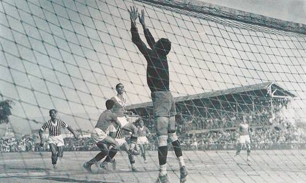
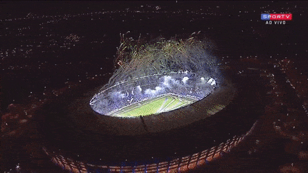
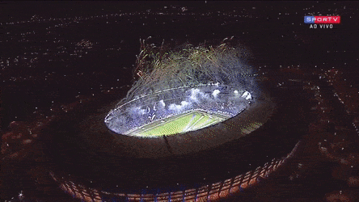

Nossa história
O Cruzeiro Esporte Clube nasceu através do esforço de desportistas da comunidade italiana em Belo Horizonte, com o nome de Societá Sportiva Palestra Itália, em 2 de janeiro de 1921. Após mais de 91 anos de história, o Clube se transformou em uma das maiores agremiações de futebol do mundo. Dos anos iniciais, datam os primeiros ídolos e conquistas do Palestra, como o tricampeonato estadual de 1928, 1929 e 1930, com uma equipe que contava com os lendários Ninão, Nininho, Bengala e Piorra. Em 1942, com a entrada do Brasil na 2ª Guerra Mundial, um decreto de lei do governo federal proibiu o uso de termos que remetem à Itália em entidades, instituições e estabelecimentos no Brasil. Com isso, o Clube precisou ser renomeado e o nome escolhido foi Cruzeiro Esporte Clube, em homenagem ao símbolo maior da pátria brasileira. Assim como o nome, o uniforme também sofreu mudanças. Antes verde e vermelho, em homenagem à bandeira italiana, o Clube adotou o azul e branco, inspirado pela seleção da Itália. Nas décadas seguintes, o que se viu foi o crescimento de um gigante, especialmente após a inauguração do Estádio Magalhães Pinto, o Mineirão, onde o Cruzeiro conquistou os principais títulos da história do futebol de Minas Gerais. Com craques como Tostão, Piazza, Dirceu Lopes, Raul, Zé Carlos, Palhinha, Joãozinho, o fenômeno Ronaldo, Sorín, Alex, Fábio e tantos outros, o time passou a ser um dos clubes brasileiros com maior número de conquistas internacionais. São dois títulos da Copa Libertadores (1976 e 1997), dois da Supercopa (1991 e 1992), um da Recopa (1999), um da Copa Ouro (1995) e um da Copa Master (1995). No âmbito nacional, o time azul foi quatro vezes campeão brasileiro (1966, 2003, 2013 e 2014) e, em cinco outras ocasiões, conquistou a Copa do Brasil (1993, 1996, 2000, 2003 e 2017). Além dos títulos, o Cruzeiro é reconhecido mundialmente pela sua excelente estrutura e como um dos principais reveladores de talentos para o futebol, como aconteceu em relação a Ronaldo, Maicon, Gomes, Luisão, Wendell, Jussiê, Beletti e muitos outros. Em setembro de 2009, a Federação Internacional de História e Estatística do Futebol (IFFHS), entidade alemã reconhecida pela FIFA, apontou o Cruzeiro como o Melhor Clube Brasileiro do Século XX. O instituto levou em consideração a performance dos clubes do mundo em competições organizadas pelas federações continentais e só confirmou o que já sabiam todos aqueles que acompanham de perto a bela trajetória do time cinco estrelas.
 
